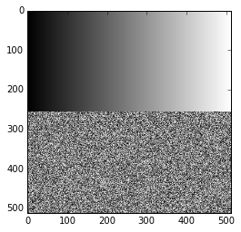

PyJEM.detector(検出器指定)¶
概要¶
detectorパッケージは、検出器の情報の変更、IN/OUT、Auto機能の実行などを行うことができます。
検出器情報は検出器ごとに持つため、detector.Detector( arg )の引数で検出器を指定し情報の変更、Auto機能の実行を行うことができます。
detectorパッケージの読み込み¶
[2]:
from PyJEM.offline import detector
[3]:
help(detector)
Help on package PyJEM.offline.detector in PyJEM.offline:
NAME
PyJEM.offline.detector - offline detector package
PACKAGE CONTENTS
function
DATA
detectors = ['camera', 'STEM Image']
extention_list = ['jpg', 'tif', 'bmp', 'png']
i = 1
ref_imagefilename = r'\snapshot.'
resource_path = r'C:\Anaconda3\lib\site-packages\PyJEM\offline\resourc...
word = 'STEM Image'
FILE
c:\anaconda3\lib\site-packages\pyjem\offline\detector\__init__.py
PyJEMで制御可能な検出器名一覧の取得¶
このコマンド実行時に利用できる検出器一覧をList型で取得します。 このコマンドは、PyJEM.detectorをimport時に実行しています。
[4]:
detector.get_attached_detector()
[4]:
['camera', 'STEM Image']
検出器の挿入¶
引数で指定した検出器を挿入します。
挿入できる検出器は、import detectorで表示される検出器です。
[4]:
detect = "camera"
detector.assign_channel(detect, 1)
[4]:
{'camera': '1'}
検出器の指定¶
detectorパッケージを読み込むと、detectorsという変数に利用できる検出器一覧Listが入る。
初回パッケージ読み込み時に利用できる検出器一覧は表示される。
*取得できる検出器名はご利用の装置によって異なります。
[15]:
detect = "camera"
for i in detector.detectors:
if(detect in i):
cam = detector.Detector(i)
break
camera is Correct!
[7]:
detector.detectors
[7]:
['camera', 'STEM Image']
[9]:
cam = detector.Detector(0)
camera is Correct!
Live状態の変更¶
Live状態の停止¶
指定した検出器のLive状態を停止にします。
Live状態の変更に成功すると戻り値が{“status”:“OK”}
Live状態の変更に失敗すると戻り値が{“status”:“Failed”}
[10]:
cam.livestop()
[10]:
{'OK', 'status'}
Live状態の開始¶
指定した検出器のLive状態を開始にします。
Live状態の変更に成功すると戻り値が{“status”:“OK”}
Live状態の変更に失敗すると戻り値が{“status”:“Failed”}
[11]:
cam.livestart()
[11]:
{'OK', 'status'}
像の撮影・取得¶
選択した検出器で像の撮影・保存を行う。保存できる拡張子は、jpg, tif, bmp
撮影の可否は存在し、TEMCenterのUIから画像撮影できない場合はPyJEMからも撮影が出来ない。
検出器が入っていることが前提条件となる。
Snapshot (拡張子のみの入力)¶
像の撮影を行い、引数で指定した拡張子の画像ファイルをbyte列として返す。
[12]:
ext = "tif" # tif, jpg, bmp
data = cam.snapshot(ext)
print("Size: {0}" .format(data.__sizeof__()))
print("Type: {0}" .format(type(data)))
---------------------------------------------------------------------------
TypeError Traceback (most recent call last)
<ipython-input-12-3c985fbc960d> in <module>()
1 ext = "tif" # tif, jpg, bmp
2
----> 3 data = cam.snapshot(ext)
4 print("Size: {0}" .format(data.__sizeof__()))
5 print("Type: {0}" .format(type(data)))
C:\Anaconda3\lib\site-packages\PyJEM\offline\detector\function.py in snapshot(self, extention, save, filename, show)
153 if(filename == None):
154 f = datetime.datetime.today()
--> 155 filename = f.strftime("%Y%m%d_%H%M_%S_") + self.detector
156 cv2.imwrite(resource_path + "\\" + filename + "." + extention, img)
157 # file = open(resource_path + "\\" + filename + "." + extention, "wb")
TypeError: Can't convert 'int' object to str implicitly
[13]:
help(cam.snapshot)
Help on method snapshot in module PyJEM.offline.detector.function:
snapshot(extention, save=False, filename=None, show=False) method of PyJEM.offline.detector.function.Detector instance
| [Offline]
| **Summary**
| Take an image with the specified extension.
The captured image is returned as a file stream.
| Select whether to save the image file with flag.
| **arg**
| extention: "jpg", "png", "bmp", "tiff"
| flag: True: save image file.
| filename: Name of file to save
| show: show the saved file.
| **return**
| type : Stream
| File stream saved with the selected extension
Snapshot (撮影した像の表示)¶
像の撮影で取得した画像を表示する。（IronPython上でのみ表示可能)
実行の戻り値は、保存された画像のファイルパス
[16]:
%matplotlib inline
ext = "tif" # tif, jpg, bmp
cam.snapshot(ext,show = True)

Snapshot (画像ファイルの保存)¶
引数のsaveをTrueにすると、ファイル名がSnapShot実行時の日時の画像ファイルとして保存する。
PyJEMインストール時にデスクトップに作成される…\PyJEM\imageが画像保存されるフォルダへのショートカット
[9]:
ext = "tif" # tif, jpg, bmp
cam.snapshot(ext, save=True)
[9]:
array([[ 0, 0, 1, ..., 254, 255, 255],
[ 0, 0, 1, ..., 254, 255, 255],
[ 0, 0, 1, ..., 254, 255, 255],
...,
[ 40, 117, 162, ..., 2, 78, 86],
[124, 64, 52, ..., 249, 242, 237],
[114, 207, 175, ..., 19, 4, 117]], dtype=uint8)
Snapshot (画像ファイル名を指定して保存)¶
引数のfilenameにファイル名を入力することで、任意のファイル名で保存することができる。
filenameには、拡張子無しで入力
ファイル名以外(C:….:nbsphinx-math:filenameといったパスあり)では、保存することができない
[17]:
ext = "tif" # tif, jpg, bmp
cam.snapshot(ext, show=True, save=True, filename="test")
LiveSnapshot¶
Live状態を止めずに画像の撮影/取得
引数で指定できるのは拡張子のみで、取得できるデータは指定した拡張子で保存された画像ファイルのbyte列
[60]:
ext = "tif" # tif, jpg, bmp
data = cam.livesnapshot(ext)
print("data size: {0}" .format(data.__sizeof__()))
print("data type: {0}" .format(type(data)))
data size: 182715
data type: <class 'bytes'>
生画像の取得¶
指定した検出器で撮影した生の画像データを取得することができる。
上記で説明した画像の取得では、スケールバーや検出器情報が画像データの中に含まれるが、
以下の関数で取得した画像データには含まれない。
[61]:
data = cam.snapshot_rawdata()
print("data size: {0}" .format(data.__sizeof__()))
print("data type: {0}" .format(type(data)))
data size: 1048609
data type: <class 'bytes'>
検出器情報の取得¶
Json Dict型で検出器情報を取得する
[18]:
data = cam.get_detectorsetting()
rdata = sorted(data.items(), key=lambda x: x[0])
for k,v in rdata:
print("{0}: {1}" .format(k,v))
AreaModeImagingArea: {'Width': 256, 'Left': 128, 'Height': 256, 'Top': 128}
AreaModeImagingAreaMaximum: 2048, 2048
AreaModeImagingAreaMinimum: 4, 2
CanBinning: False
CanGain: True
CanOffset: True
ExposureTime: []
ExposureTimeIndex: 0
ExposureTimeIndexMaximum: 4094
ExposureTimeIndexMinimum: 0
ExposureTimeString: 0.17
ExposureTimeValue: 0.16666666666666666
FrameRate: []
GainIndex: 0
GainIndexMaximum: 4095
GainIndexMinimum: 0
HorizontalLineNo: 1
ImagingArea: {'Width': 512, 'X': 0, 'Height': 512, 'Y': 0}
ImagingAreaMaximum: 1280, 1024
ImagingAreaMinimum: 4, 2
OffsetIndex: 0
OffsetIndexMaximum: 4095
OffsetIndexMinimum: 0
OutputImageInformation: {'EffectBits': 16, 'PixelsPerMeter': {'Vertical': 3401, 'Horizontal': 3401}, 'DataBits': 16, 'ImageSize': {'Width': 512, 'Height': 512}}
ScanRotation: 0.0
SpotPosition: {'X': 0, 'Y': 0}
SyncMode: 1
Version: 1.00
frameIntegration: 20
frameIntegrationMaximum: 255
frameIntegrationMinimum: 1
horizontalLineNoMaximum: 512
horizontalLineNoMinimum: 1
scanMode: 0
scanRotationMaximum: 360.0
scanRotationMinimum: 0.0
scanRotationStep: 0.1
spotPositionMaximum: 2047, 2047
spotPositionMinimum: 0, 0
検出器情報の設定¶
指定した検出器情報の変更をします。
検出器によって変更できないものがあります。
ExposureTime (Value)¶
[63]:
value = 1000
print("Before value: {0}" .format(cam.get_detectorsetting()["ExposureTimeValue"]))
after=cam.set_exposuretime_value(value)
print("After value: {0}" .format(after["ExposureTimeValue"]))
Before value: 1000
After value: 1000
[19]:
help(cam.set_exposuretime_value)
Help on method set_exposuretime_value in module PyJEM.offline.detector.function:
set_exposuretime_value(value) method of PyJEM.offline.detector.function.Detector instance
| [Offline]
| **Summary**
| Set the exposure time as usec value.
| **arg**
| value - 0-1000000[μsec] (It depends on TEM model)
| **return**
| The value set to TEM.
| type : json.Dict
Gain (Contrast)¶
[64]:
value = 19535
print("Before value: {0}" .format(cam.get_detectorsetting()["GainIndex"]))
after=cam.set_gainindex(value)
print("After value: {0}" .format(after["GainIndex"]))
Before value: 0
After value: 19535
Offset (Brightness)¶
[65]:
value = 32128
print("Before value: {0}" .format(cam.get_detectorsetting()["OffsetIndex"]))
after=cam.set_offsetindex(value)
print("After value: {0}" .format(after["OffsetIndex"]))
Before value: 32128
After value: 32128
Scan検出器のみ¶
ScanRotation¶
Scan角度変更を行います。
360以上の値が入力された場合は、0-359の値に丸め込まれます。
[66]:
value = 0
print("Before value: {0}" .format(cam.get_detectorsetting()["ScanRotation"]))
after=cam.set_scanrotation(value)
print("After value: {0}" .format(after["ScanRotation"]))
Before value: 0
After value: 0
Scanモードの変更¶
以下の値を入れると対応したScanモードに切り替わる
* 0: Search (Full Scan)
* 1: Area Scan * 3: Spot
Full Scanモード¶
[67]:
value = 0
print("Before value: {0}" .format(cam.get_detectorsetting()["scanMode"]))
after=cam.set_scanmode(value)
print("After value: {0}" .format(after["scanMode"]))
Before value: 0
After value: 0
Imagingarea¶
検出器が取得する画像サイズの変更をします。
Heightが高さ、Widthが幅
*指定できる値の最大最小値は、get_detectorsetting()で取得することができます。
[68]:
w = 512
h = 512
print("Before value: {0}" .format(cam.get_detectorsetting()["ImagingArea"]))
after=cam.set_imaging_area(w, h)
print("After value: {0}" .format(after["ImagingArea"]))
Before value: {'X': 0, 'Y': 0, 'Width': 512, 'Height': 512}
After value: {'X': None, 'Y': None, 'Width': 512, 'Height': 512}
Spot Mode¶
[69]:
value = 3
print("Before value: {0}" .format(cam.get_detectorsetting()["scanMode"]))
after=cam.set_scanmode(value)
print("After value: {0}" .format(after["scanMode"]))
Before value: 0
After value: 3
SpotPosition¶
SpotLine座標の変更を行います。
[70]:
x = 512
y = 512
print("Before value: {0}" .format(cam.get_detectorsetting()["SpotPosition"]))
after=cam.set_spotposition(x, y)
print("After value: {0}" .format(after["SpotPosition"]))
Before value: {'X': 0, 'Y': 0}
After value: {'X': 512, 'Y': 512}
AutoFocus¶
TEMCenterに実装されているAutoFocus機能を実行する。
実行するための前提条件に * ビームバルブが開いている * 検出器が挿入されている 等
実行すると、AutoFocusの処理が終了するまで待つ
[20]:
cam.AutoFocus()
[20]:
{'OK', 'status'}
AutoContrastBrightness¶
TEMCenterに実装されているAutoContrastBrightness機能を実行する。
実行するための前提条件に * ビームバルブが開いている * 検出器が挿入されている 等
実行すると、AutoContrastBrightnessの処理が終了するまで待つ
[72]:
cam.AutoContrastBrightness()
[72]:
{'OK', 'status'}
AutoStigmators¶
TEMCenterに実装されているAutoStigmators機能を実行する。
実行するための前提条件に * ビームバルブが開いている * 検出器が挿入されている 等
実行すると、AutoStigmatorsの処理が終了するまで待つ
[73]:
cam.AutoStigmator()
[73]:
{'OK', 'status'}
AutoZ¶
TEMCenterに実装されているAutoZ機能を実行する。
実行するための前提条件に * ビームバルブが開いている * 検出器が挿入されている 等
実行すると、AutoZの処理が終了するまで待つ
[74]:
cam.AutoZ()
[74]:
{'OK', 'status'}
AutoOrientation¶
TEMCenterに実装されているAutoOrientation機能を実行する。
実行するための前提条件に * ビームバルブが開いている * 検出器が挿入されている 等
実行すると、AutoOrientationの処理が終了するまで待つ
[75]:
cam.AutoOrientation()
[75]:
{'OK', 'status'}